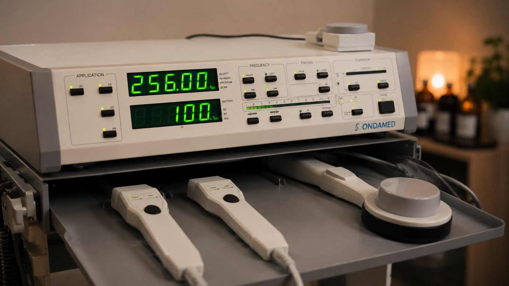

Ondamed ist das konkrete Gerät, mit dem ich die Frequenztherapie in meiner Praxis durchführe. Es arbeitet mit pulsierenden elektromagnetischen Feldern (PEMF) und einer Biofeedback-Messung, um herauszufinden, welche Frequenzen Ihr Körper aktuell benötigt.

Über eine Applikatorspule wird zunächst per Biofeedback-Messung ermittelt, wo Belastungen oder Störungen im Regulationssystem des Körpers liegen und welche Impulse aktuell sinnvoll erscheinen. Die passenden Frequenzen werden anschließend direkt in derselben Sitzung angewendet – individuell auf Sie abgestimmt, nicht nach festem Programm.
PEMF steht für „Pulsed Electromagnetic Field" – gepulste elektromagnetische Felder. Ondamed ist ein PEMF-Gerät, das diese Felder mit einer Biofeedback-Rückmeldung kombiniert. Die Anwendung ist sanft, schmerzfrei und wird von meinen Patienten als sehr angenehm beschrieben.
Ob die Ondamed-Therapie für Ihre Situation sinnvoll ist, klären wir gemeinsam im Erstgespräch.
Jetzt Erstgespräch vereinbaren0911 6007651 · Termine Mo–Sa 8–20 Uhr, So 10–22 Uhr
Hinweis: Die Ondamed-Therapie (PEMF) ist ein naturheilkundliches, ergänzendes Verfahren. Sie ist wissenschaftlich umstritten und wird von der Schulmedizin nicht allgemein anerkannt. Die Angaben beschreiben Arbeitsweise; sie stellen kein Heilversprechen dar und ersetzen keine ärztliche Diagnose oder Behandlung.